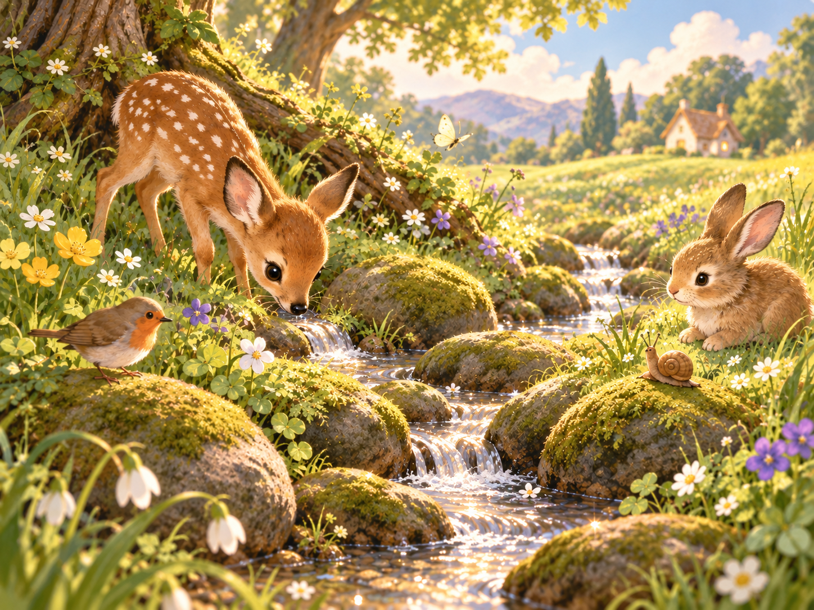
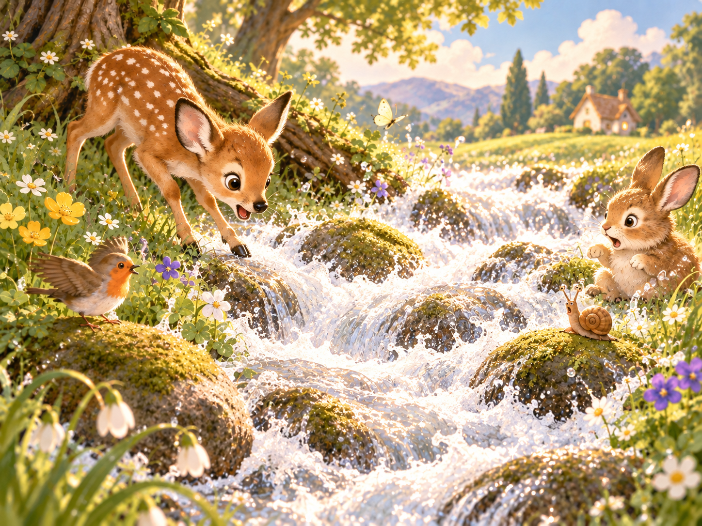
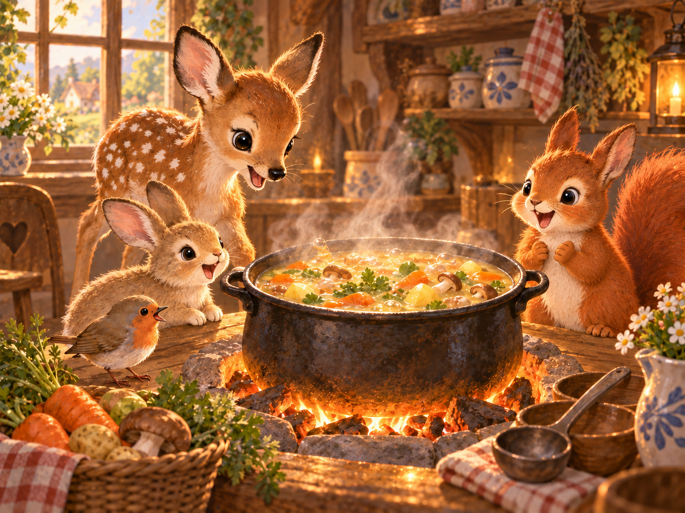
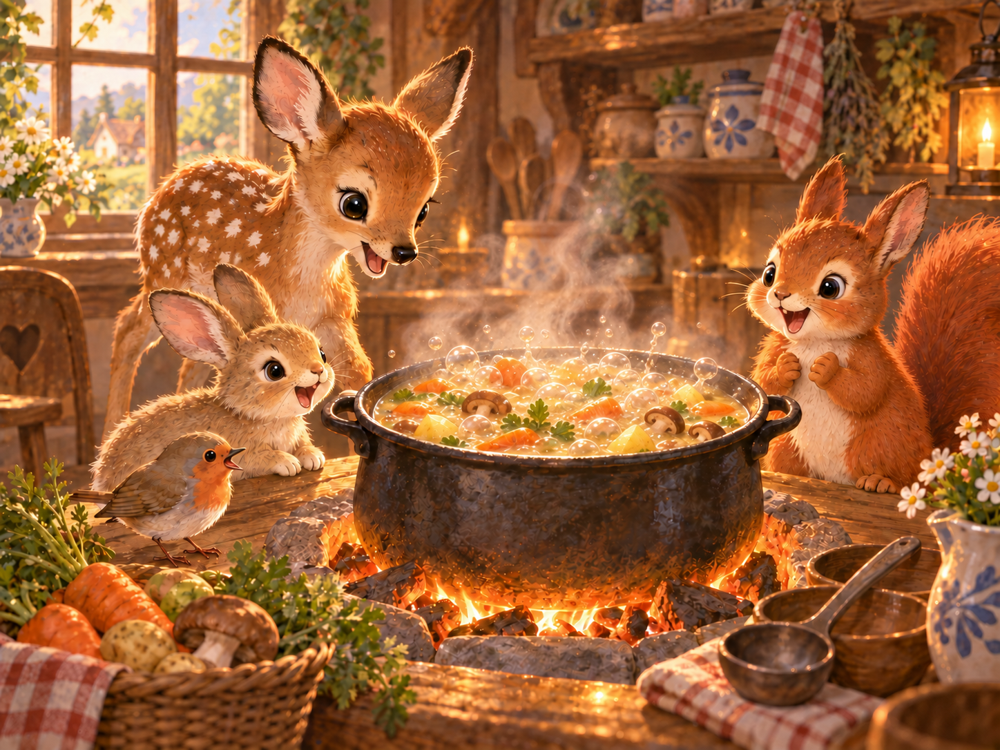
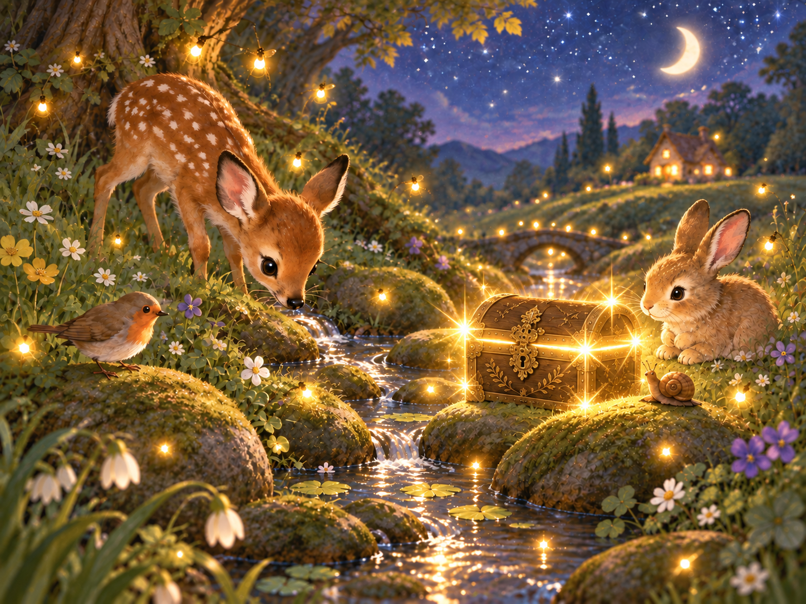

어느 배에 ‘동동’을
붙이고 싶나요?
두 그림을 보고 마음이 가는 쪽을 골라 보세요.
설명은 잠깐 뒤에 읽어도 좋습니다.
정답을 맞히는 시험이 아닙니다. 내가 어떤 느낌을 연결하는지 살펴보는 시작입니다.
삽화는 어감을 보여주기 위한 AI 연출입니다. 크기나 세기의 수치를 측정한 실험은 아닙니다.
이제 다른 말도 바꿔 볼까요 ↓시냇물이 졸졸졸 흐르고 있습니다.


작은 배 하나가 물 위에 동동 떠 있습니다.
냄비 안에서 찌개가 끓고 있습니다.


밤이 오자 주변이 반짝반짝 빛납니다.


같은 모음 자리를 바꿨는데,
머릿속 장면까지 달라졌나요?
모음 하나 바꿨을 뿐인데
졸졸과 줄줄, 동동과 둥둥.
우리가 읽은 것은 몇 글자였지만, 떠올린 것은 크기와 움직임이었습니다.
방금 네 번, 똑같은 자리를
바꾸고 계셨습니다.
졸졸졸과 줄줄줄, 동동과 둥둥, 보글보글과 부글부글. 자음은 그대로 뒀습니다. 바뀐 건 모음의 종류뿐이었습니다.
한국어에는 이렇게 모음 하나로 크기와 무게, 세기의 느낌이 갈리는 말들이 많습니다. 언어학에서는 이런 현상을 음상징(音象徵)이라 부릅니다 — 말소리와 크기·세기 같은 인상이 연결되는 현상입니다. 반복되는 말에서는 같은 종류의 모음이 여러 자리에 바뀝니다. 글자 한 칸만 고친다는 뜻은 아닙니다.
다만 "ㅗ는 항상 작고 ㅜ는 항상 크다"는 절대 법칙은 아닙니다. 예외도 많습니다. 여기서 확인한 건 하나의 경향이지, 모든 한국어 단어에 적용되는 공식이 아닙니다.
그런데 네 번째 쌍(반짝반짝→번쩍번쩍)은 다른 자리가 바뀌었습니다. ㅗ·ㅜ가 아니라 ㅏ·ㅓ였죠. 그러니까 이건 ㅗ→ㅜ만의 특별한 규칙이 아니라, 더 큰 규칙 — 양성모음(ㅏ, ㅗ 계열)과 음성모음(ㅓ, ㅜ 계열) 사이의 대립 — 의 한 조각이었던 셈입니다.
중요한 건 이겁니다. 이 느낌의 차이는 한국어라는 언어의 특징이지, 한글이라는 문자 자체가 만들어낸 게 아닙니다. 영어에도 의성어·의태어가 있고, 어떤 문자로 적든 이 말들의 소리 차이는 그대로입니다. 한글은 이 소리를, 자음과 모음을 조합해 한 글자 안에 적는 방식일 뿐입니다.
이번에는 모음을 그대로 두고,
끓는 대상을 바꿔 봅니다.
‘보글보글’과 ‘부글부글’은 액체가 끓는 소리에 쓸 수 있습니다. 그런데 ‘부글부글’은 끓어오르는 마음을 나타내기도 합니다. 같은 말이 어디까지 갈 수 있을까요?
저녁을 준비하며 냄비를 들여다봤다.
찌개가 부글부글 끓었다.
지금 끓는 것은 냄비 속 액체입니다. 이번에는 앞뒤 상황과 주어를 바꿔 보세요.
첫 장면에서는 눈앞의 거품을 떠올렸습니다. 두 번째 문장에서는 안으로 치미는 감정을 떠올릴 수 있습니다. 한국어기초사전도 ‘부글부글하다’에 액체가 끓는 뜻과 마음이 들끓는 뜻을 함께 싣고 있습니다.
‘속이 끓다’는 문맥에 따라 배 속의 움직임을 가리킬 수도 있습니다. 여기서는 ‘억울한 말을 들었다’는 앞 문장이 감정으로 읽도록 이끕니다. 단어와 문맥이 함께 장면을 만듭니다.
그림은 그대로.
이번에는 말만 바꿔 보세요.
배가 뜨고, 냄비가 끓고, 빛이 빛나는 사건은 같습니다. 어떤 크기와 세기로 기억되는 하루를 만들고 싶나요?
사건은 그대로인데, 묘사는 달라졌습니다.
한국어의 소리가 만드는 인상, 그 소리 차이를 눈앞에 적어 주는 한글. 오늘 바꿔 본 것은 그 사이의 작은 조각입니다.
동과 둥의 조각에서 컴퓨터 속 한글까지
근거 자료와 그림에 관하여
음상징과 모음 교체의 설명은 국립국어원 자료를 참고했습니다. 보글보글·부글부글은 온도계나 데시벨처럼 수치가 정해진 표현이 아닙니다. 삽화의 배 크기·거품·빛은 어감의 차이를 보여주기 위한 AI 연출이며, 독자의 선택을 수집하거나 통계로 제시하지 않습니다. 그림의 강도와 단어가 언제나 일대일로 대응하는 것도 아닙니다. 마지막 이야기와 문맥 전환 예문은 이 기사를 위해 작성했습니다. 합성 음성이나 현장 녹음은 사용하지 않았습니다.
국립국어원 · 동동과 둥둥 · 국립국어원 · 자모음 교체 · 한국어기초사전 · 부글부글하다 · 한국어기초사전 · 번쩍번쩍